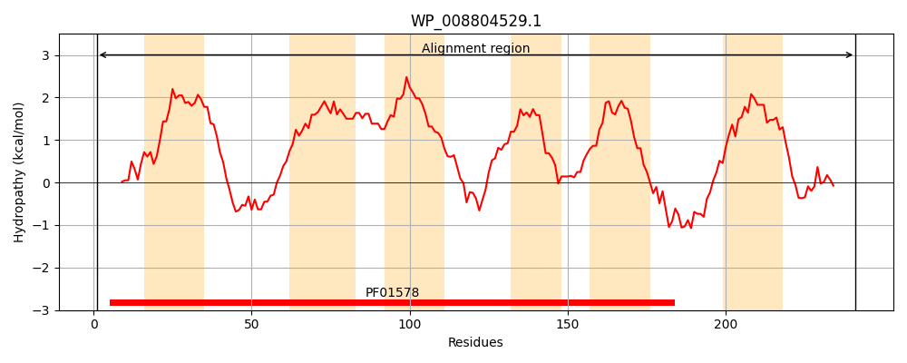
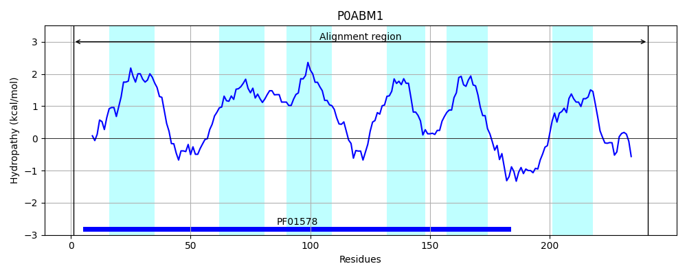
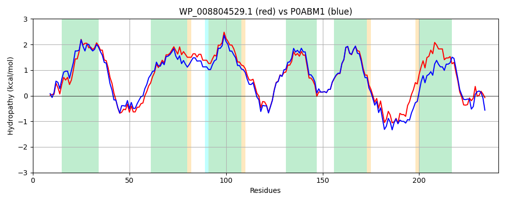

Hit Accession: P0ABM1
Hit TCID: 9.B.14.2.3
Hit Description: gnl|BL_ORD_ID|8717 gnl|TC-DB|P0ABM1|9.B.14.2.3 Heme exporter protein C - Escherichia coli.
Mach Len: 241
e:0.000000
Query TMS Count : 6
Hit TMS Count: 6
TMS-Overlap Score: 5.550000
Predicted Substrates:CHEBI:5651;ferroheme b
BLAST Alignment:
Score: 1043 , Bit scores: 406 bits, E-value: 1.3e-145, Alignment length: 241, Percentage identity: 77
Query: 1 MWKALHQLAIPERLYRLCGCWIPWLAALSALLLVIGLGWGFGFAPADYQQGESYRIMYLHVPAAMWSMGLYLAMAVAAFVGVVWQIKMADLAIAALAPVGAVCTLVALVSGAAWGKPMWGTWWIWDARLTSELVLLFLYAGVIALWHAFDDRRLAGRAAGILVLVGVVNLPIIHYSVYWWNTLHQGSTNLQQTIDPSMRLPLRICIFAFLMLSVTLTLMRLRNLILQLERRRPWVVALVNK 241
MWK LHQLAIP RLY++CG +IPWLA S ++L +G WGFGFAPADYQQG SYRI+YLHVPAA+WSMG+Y +MAVAAF+G+VWQ+KMA+LA+AA+AP+GAV T +ALV+G+AWGKPMWGTWW+WDARLTSELVLLFLY GVIALWHAFDDRRLAGRAAGILVL+GVVNLPIIHYSV WWNTLHQGST +QQ+IDP+MR PLR IF FL+LS TLTLMR+RNLIL +E+RRPWV L+ K
Sbjct: 1 MWKTLHQLAIPPRLYQICGWFIPWLAIASVVVLTVGWIWGFGFAPADYQQGNSYRIIYLHVPAAIWSMGIYASMAVAAFIGLVWQMKMANLAVAAMAPIGAVFTFIALVTGSAWGKPMWGTWWVWDARLTSELVLLFLYVGVIALWHAFDDRRLAGRAAGILVLIGVVNLPIIHYSVEWWNTLHQGSTRMQQSIDPAMRSPLRWSIFGFLLLSATLTLMRMRNLILLMEKRRPWVSELILK 241 | Protein Hydropathy Plots: |
|---|
|  |  |
Pairwise Alignment-Hydropathy Plot:
|
|---|
|  |